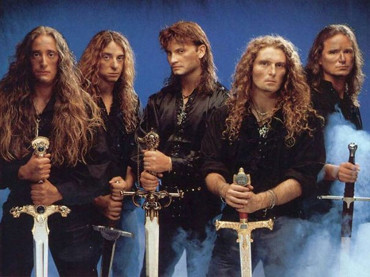

Overview
Power metal is a subgenre of heavy metal music combining characteristics of traditional heavy metal with speed metal, often within a symphonic context. Generally, power metal is characterized by a faster, lighter, and more uplifting sound, in contrast with the heaviness and dissonance prevalent in, for example, extreme metal. Power metal bands usually have anthemic songs with fantasy-based subject matter and strong choruses, thus creating a theatrical, dramatic and emotionally "powerful" sound.
History

Anthropologist Sam Dunn traced the origins of power metal back to the late 1970s, when the groundwork for power metal lyrical style was laid down by Ronnie James Dio. The fantasy-oriented lyrics he wrote for Rainbow, concentrated around medieval, renaissance, folk, and science fiction themes, directly influenced modern power metal bands. According to Dunn, the songs "Stargazer" and "A Light in the Black" from the 1976 album Rising, as well as "Kill the King" and "Lady of the Lake" from the 1978 album Long Live Rock 'n' Roll, might be among the earliest examples of power metal. In his 2011 documentary series Metal Evolution, Dunn further explained how Rob Halford of Judas Priest created a blueprint for power metal vocal delivery. His almost constant high-pitched singing became one of the main characteristics of power metal. The twin-guitar sound promoted by Judas Priest's duo of K. K. Downing and Glenn Tipton also highly influenced this subgenre. Another British band, Iron Maiden, brought epic and melodic sensibility to metal, creating anthemic, singalong music, an approach widely embraced by modern power metal musicians. Referred to as the "main prototype" of the power metal genre, Iron Maiden was heavily influenced by Heaven and Hell and Mob Rules (the first two albums of Black Sabbath's Dio-era), which would also go on to influence modern power metal.
Characteristics
Power metal is today associated with fast guitar riffs and drumming, twin melodies, operatic singing, and thus "bears all the hallmarks of traditional metal." The sound is tempered by characteristics of speed metal, power metal's musical forerunner. Power metal is highly focused on the vocalist, with "clean" vocals being much more prevalent than the growling vocals often associated with extreme metal. Inspired by Ronnie James Dio, Bruce Dickinson, Rob Halford, Geoff Tate, and other heavy metal vocalists, power metal vocals are often in a high register, and the singer's vocal range is usually wide. The majority of the genre's vocalists sing in the tenor range and are capable of hitting very high notes, for example Timo Kotipelto of Stratovarius, Tony Kakko of Sonata Arctica, Michael Kiske of Helloween, and Andre Matos (ex-Angra). There are many exceptions who sing in either baritone or bass range, like Joakim Brodén of Sabaton. Some vocalists sing in a harsh, thrash metal style, including Chris Boltendahl of Grave Digger, Kai Hansen of Gamma Ray, Peavy Wagner of Rage, and Wintersun's Jari Mäenpää. Many power metal vocalists record multi-layered vocals, creating a choral effect.